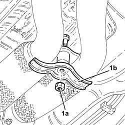
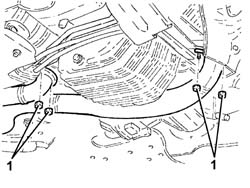
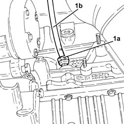
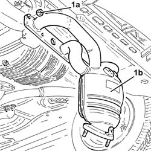
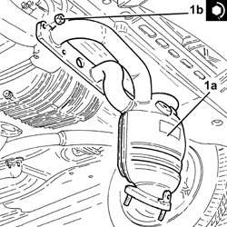
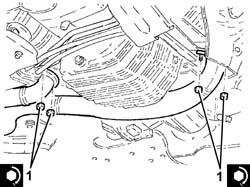

1080B38 left catalytic preconverter r r or replace cylinder head gasket
- Path
- Procedures > 10 ENGINE > 1080 EXHAUST EMISSION CONTROL SYSTEM > 1080B exhaust emission control system > 1080B38 left catalytic preconverter r r or replace cylinder head gasket
- Kind
- repair procedure (removal / refitting; the operation number is the code)
- Applies to
- engines: 3.2 V6; all production periods
- Interactive page
- https://sloeber94.github.io/elrnDB-a147/en/#/3024985
Applies to: engines: 3.2 V6; all production periods
 Removing
Removing
 Refitting
RefittingPosition the vehicle on the ramp.
Make sure that the ignition key is in the OFF position. then disconnect the battery negative (-) terminal.
 | Name | Connector |
|---|---|---|
- | Battery |
Release and rmove the engine oil dipstick.
Proceed with removal 7055B54 under-engine guard - r r .
Proceed with removal 1080B92 left upper lambda sensor r r .
Proceed with removal 1076A70 heat shield for left catalytic preconverter r r .
1. Undo the bolt (1a) and remove the bracket (1b) joining the exhaust pipes between the preconverters and the catalytic converters.

Applies to: engines: 3.2 V6; all production periods
1. Undo the nuts fixing the exhaust pipes between the preconverters and the catalytic converters, catalytic preconverter side.
Remove the gaskets.

Applies to: engines: 3.2 V6; all production periods
1. Undo the nut (1a) and remove the engine oil dipstick tube (1b).

Applies to: engines: 3.2 V6; all production periods
1. Undo the nuts (1a) and remove the left catalytic preconverter (1b).
Remove the gasket.

Applies to: engines: 3.2 V6; all production periods
Refitting
Removing1. Refit the left catalytic preconverter (1a) complete with gasket and secure it by tightening the nuts (1b) to the recommended torque.
 | Fastening | Component | Ø | Value (daNm) |
|---|---|---|---|---|
1b | Nut | LEFT PRECONVERTER | M8 | (Cylinder head side) 2.3 ÷ 2.8 |

Applies to: engines: 3.2 V6; all production periods
Place the guide pipe for the engine oil dipstick back in its housing and secure it using the nut.
Place the engine oil dipstick back in its seating.
1. Place the gaskets in their seats, then tighten the nuts fixing the exhaust pipes between the preconverters and the catalytic converters, catalytic preconverter side, to the recommended torque.
| Fastening | Component | Ø | Value (daNm) |
|---|---|---|---|---|
1 | Nut | RIGHT PRECONVERTER.CONVERTER PIPE/ | M8 | (Catalyitic preconverter side) 2.3 ÷ 2.8 |

Applies to: engines: 3.2 V6; all production periods
Place the bracket joining the exhaust pipes between the preconverters and the catalytic converters back in its housing and secure it using the bolt.
Proceed with removal 1076A70 heat shield for left catalytic preconverter r r .
Proceed with removal 1080B92 left upper lambda sensor r r .
Proceed with removal 7055B54 under-engine guard - r r .
Connect the negative (-) battery terminal.
Remove the car from the ramps.
Topics linked from this page (4)
- 1076A70 heat shield for left catalytic preconverter r r
- 1080B92 left upper lambda sensor r r
- 7055B54 under-engine guard - r r
- A1B Battery ( Connectors )